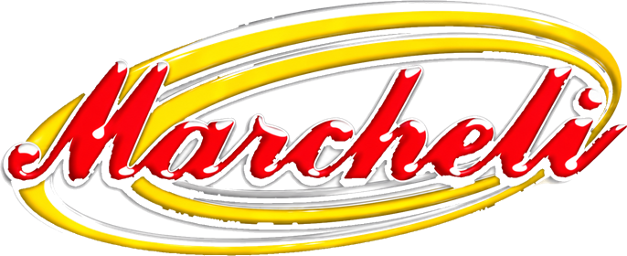

Erro 404Esta página não foi encontrada.
O endereço pode ter mudado ou não existe mais. Volte ao início para conhecer a Marcheli.
Voltar ao início
Erro 404O endereço pode ter mudado ou não existe mais. Volte ao início para conhecer a Marcheli.
Voltar ao início